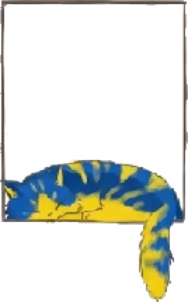

Phan Huy Tran
Web developer, PHP and Symfony.
Worked on the Bayer 04 Leverkusen online shop and built internal tools during my apprenticeship at Team Neusta in Bremen.

Web developer, PHP and Symfony.
Worked on the Bayer 04 Leverkusen online shop and built internal tools during my apprenticeship at Team Neusta in Bremen.